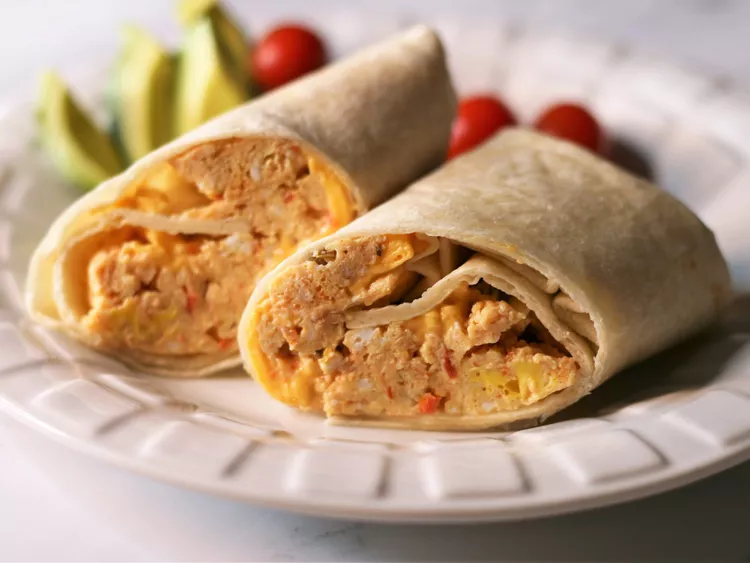

Minute Breakfast Burrito

Image by France C
Recipe by Allrecipes Member
Ingredients
- 2 Eggs
- 2 tablespoons salsa
- 1 slice reduced-fat American cheese
- 1 tortilla
Steps
- Spray a cereal bowl with nonstick cooking spray. Crack the eggs into the bowl, add the salsa, and stir.
Microwave on high for 1 minute, stir, and cook for another minute or until the mixture firms up.
- Place the cheese in the center of the tortilla and top it with the egg mixture. Wrap it all up like a
burrito and head for the car.
Return to Home Page